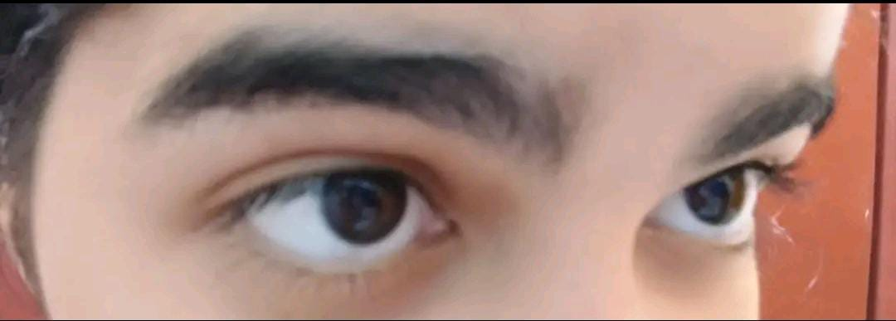
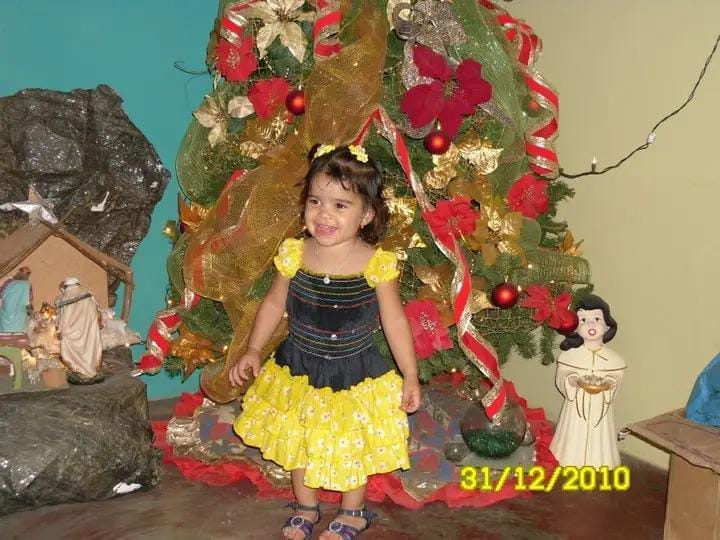
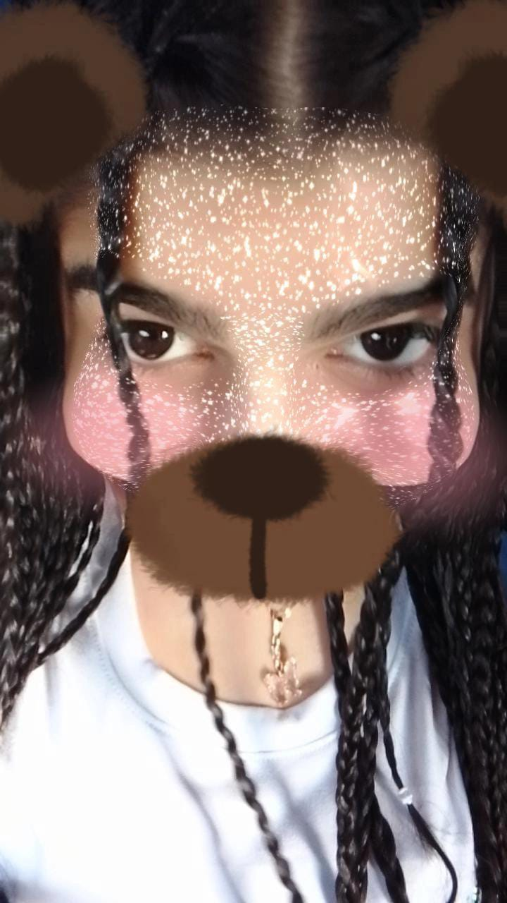

Capítulo 1: El Inicio
Todo comenzó aquel día en que estaba en tik tok y como estaba aburrido buscaba amigos y apareciste vos, una chica completamente desconocida para mi recuerdo que empezamos hablar y aun nos costaba porque no sabiamos si el otro era un maniaco o un loco jajajajaja, pero la verdad es que fue bueno y mas que bueno conocerte, al princio no queriamos hablar mucho porque no habia mucha confianza y estabamos ocupados en nuestros asuntos y contarle tu vida a un extraño parecia loco y descabellado, pero comenzamos a escribirnos poco a poco y comenzamos a saber del otro, de un ¡hola quien eres?, comenzamos a pasar ¿como estas?, ¿comiste? y muchas cosas para poder tener mas confianza
Capítulo 2: Conocernos
Comenzamos a hablar mas seguido, comenzamos a agarrarnos confianza y asi fue como nuestra amistad comenzo a crecer y la confianza igual, y nos dimos cuenta que somos dos locos la verdad no me arrepiento de ese dia haber estado aburrido y buscar amigos, porque conoci a la mejor amiga del mundo, lo cual no me arrepiento y nunca me arrepentire porque eres una chica grandiosa y mereces lo mejor del mundo , y fue asi como comenzamos a hablar por insta y nos enviabamos como 100 reels diarios donde nos identificabamos y nos ibamos conociendo y sin pensarlo encontramos muchas cosas en comun y que aparte tenemos una ezquisofrenia grande, pero apesar de todo eres una loca a la cual quiero muchos.
Capítulo 3: Confianza
Al pasar de las horas, dias y semanas, comenzamos a tener mas confianza e hablabamos mas y un dia me contaste como te hiciste novia del chico que te gusta y lo cual me hace demasiado feliz, que si el es muy importante para ti, puedan ser felices, y si el te trata como tu siempre haz querido yo siempre estare feliz porque, me contaste un poco de tu niñes y todo lo que haz pasado a tu corta edad y aun asi sigues adelante, me contaste como casi te querias ir para siempre y yo no te juzgo pero si aplaudo tu valentia porque eres uan chica fuerte , es mas para mi ya eres una mujer toda valiente a contra el mundo, aunque igual siempre seras una niña pendeja para mi, me alegra muchisimo que estes aqui con vida y espero que estes viviendo la vida y no sobreviviendo y sabes que puedes contar conmigo siempre, para lo mas complicado hasta lo mas estupido, desde diciendo sebas saque una beca hasta , sebas me levante y vi una hormiga jajajajaja y me hiciste bajar una aplicacion para enviar fotos de lo que hacemos y te agradezco mucho por ser tu simplemente.

Capítulo 4: Juntos por locos
No importa dónde nos lleve la vida, yo siempre estare para apoyarte ya sea vivo o muerto, tu sabes que soy medio estupido para no decir completo, pero este estupido te quiere,ahora con mas confianza te digo que seguro naci asi porque seguro me cai varias veces de pequeño jajaja, pero te lo digo esto de corazón, a pesar de tu dislexia ya te voy entendiendo y si a veces uso tus frases no se porque vrg se me pego eso, ya no lo usare , si no quien sabe me cobras por autor de palabras jajajaja , eres una maravillosa persona Isabel y que bueno que tu novio lo vea y te haga sentir unica y especial y nunca espectadora aunque tik tok invente como fechas para todo el año ajajajaja, esto es tambien porque como ya sabes hago puras tonterias Isabel te conozco poco tiempo y la verdad es que no se como aun no vez que eres una gran chica, tu unico defecto es ser tremenda ciega pa no verlo, y bueno sabes que cuentas conmigo para todo siempre, Te quiero mucho mi renacuajo, ricitos locos.
